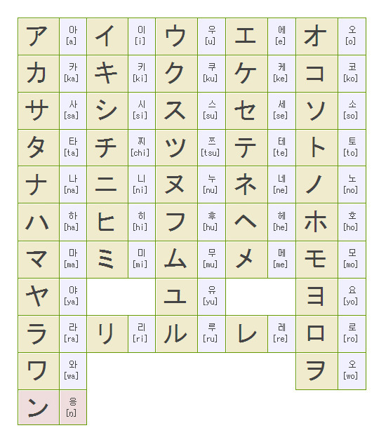

일정정리
- 1월3일까지~ :대학입시 원서넣음
- 1월5일까지 대부분 : 농어촌정시 확인서 보내야함
- 1월23일까지 대부분 : 합격자 발표
- 2월 중순까지 : 추합발표
이 만화 제발 생각날때마다 보기
이번 방학에 하고싶은거
일본어 공부(회화)
- 일단 가타가나 외우기

- 한본냥 한자 앱에서 한자 다 알게되는거
- 유튜브보고 회화 연습하기
최종목표)))) HelloTalk에서 일본인 친구 하나 사귀거나 한국말 알려주는 멘토링하기
코딩공부(뭘하지)
자바스크립트와 PYTHON
- 파이썬의 목표 : 코딩대회나 그냥 백준온라인 문제 '잘' 풀어보는거
- 자바스크립트의 목표 : 내가 뭘 할지, 인생계획이 담긴 웹 페이지를 만드는 것
- 방법: 생활코딩 강의와 유튜브 강의들
6/38(현재 12월 29일)
기한 : 1월 28일까지
대충 페이지 만드는데 일주일을 잡아서 이 강의를 2주안에 끝내기- >대충 240분 남음(4시간분량)
복습도 해야함
링피트 어드벤처(운동)
- 하루에 실제 게임 운동시간 30분씩 실제로는 1시간 들고
- 목표 : 대부분의 운동 '전부' 해보기
1월 31일까지 드래고 잡고 진엔딩 보기
- 찐목표 : 999렙 찍기
- 어렵지만 중요한운동(플랭크 엉덩이 들기, 스쿼트, 다리피기 등 ) 마스터하고 살 빼서 감량하기 목표는 건강해보일때까지
악기 : 기타 하나 배워보기
- 목표 : 아이묭 노래 여기서 찾아보기
- fight 코타로오시오 이거 칠줄알면 진짜멋있을거같음
- 목표 : 아이묭노래 일주일에 2개씩은 외워보기
대신 기타 소리는 맑고 청아하게 나야함 자랑하고 녹음할수있을정도로
코타로오시오 fight는 2월말까지 흉내라도 내면 좋을것같음
알바 하나 뛰기(찾아봐)
요리 스스로 할 수 있게 되는거
아침에 일찍 일어나기(적어도 8시 기상)